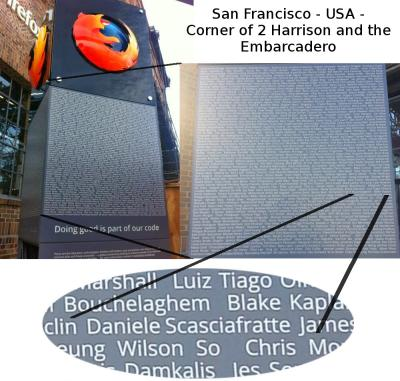

Cos'é l'Open Source e Linux
Daniele Scasciafratte
- Co-Founder & CTO of Codeat
- Mozillian, Mozilla Reps, Mozilla Tech Speaker,
Mozilla Campus Club Regional Coordinator - WordPress Italia - Project Translator Editor &
Core Contributor & WP Roma Co-Organizer - Italian Linux Society, LibreItalia, WikiToLearn, KDE Italia
- Industria Italiana del Software Libero Vice President
- Utente Debian Linux dal 2009
- Open Source Contributor Addicted
La mia esperienza
Traduzioni -> Supporto Promozione -> Contributi da sviluppatore Eventi tecnici -> Reclutamento Community Leading -> Oggi 
Open Source
“Open source (termine inglese che significa sorgente aperta), in informatica, indica un software di cui gli autori (più precisamente i detentori dei diritti) rendono pubblico il codice sorgente, favorendone il libero studio e permettendo a programmatori indipendenti di apportarvi modifiche ed estensioni. Questa possibilità è regolata tramite l'applicazione di apposite licenze d'uso.”
Open Source
Libertá di utilizzare il programma per ogni tipo d'uso
Hai accesso al codice sorgente, libertá di studiarlo e di modificarlo
Libertá di distribuirlo
Libertá di distribuire copie modificate a chiunque
Open Source = Sorgente aperto
Free Software = Software libero
Es: Un programma puó essere Open Source dietro pagamento ma non software libero
Perché è nato
Condivisione delle conoscenze informatiche
Collaborazione per migliorare il progetto
Liberi da regole fortemente limitative
Diffusione senza limiti
Questa filosofia ha portato...
Arduino
Wikimedia
OpenStreetMaps
Mozilla
LibreOffice
eMule/aMule/BitTorrent
GNU/Linux
Cos'é Linux
Dove si usa
500 Super computer - 75% usa Linux
Rendering dei film - Disney/Pixar, DreamWorks, Sony
Internet - Cisco, Netgear, D-Link
Smartphone - Android
Giochi - Lego Mindstorm NXT
Aziende - Google, Apple, Facebook, Twitter ecc